Figma file created
Figma file created
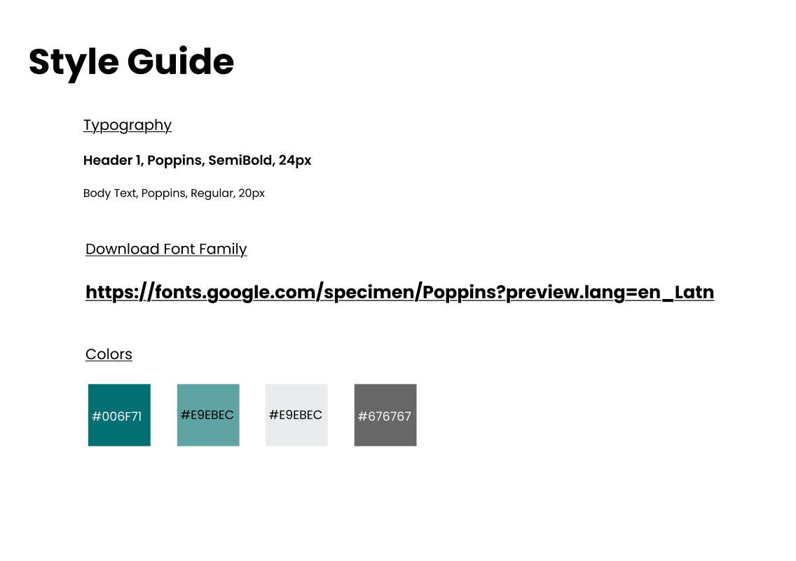
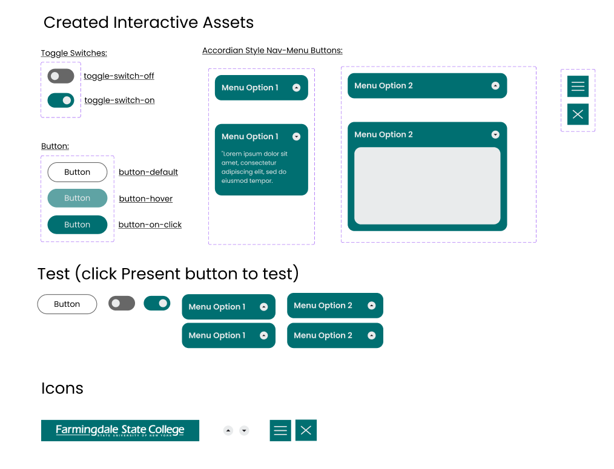
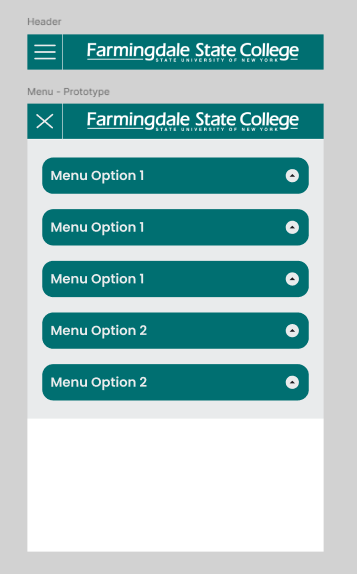
Started designing the first page of the Desktop UI
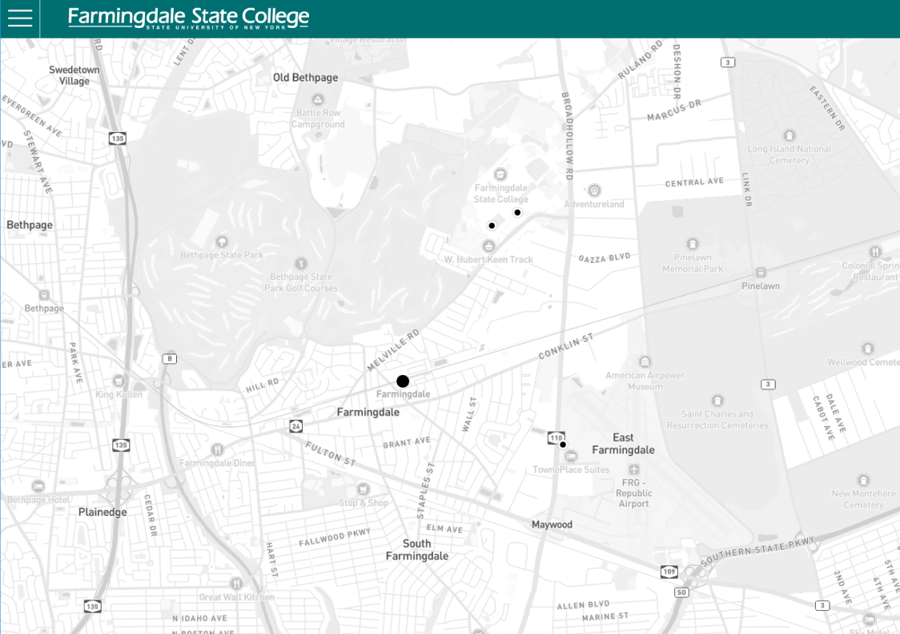
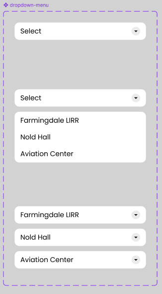
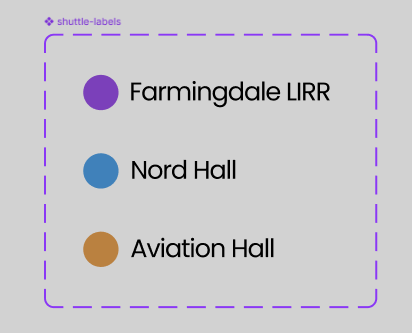
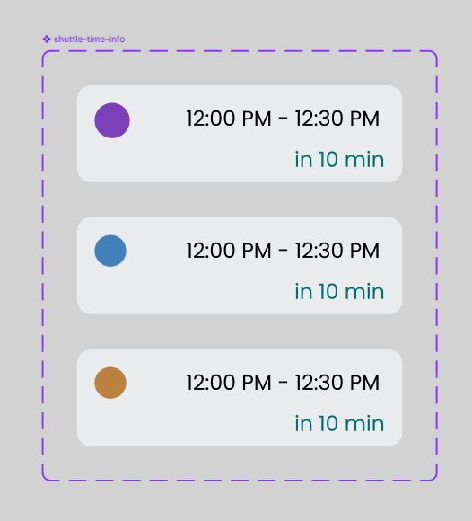
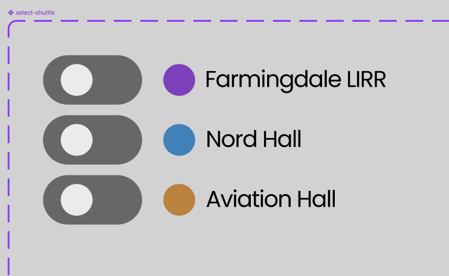
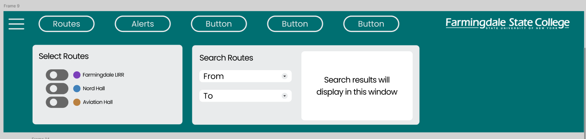
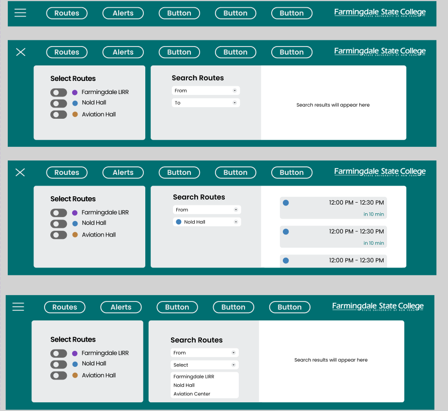
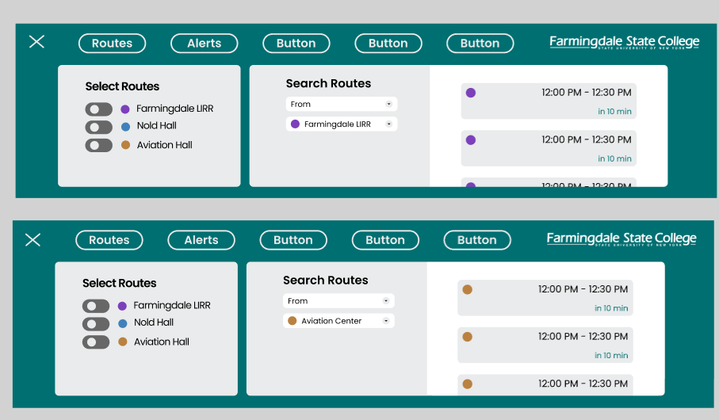
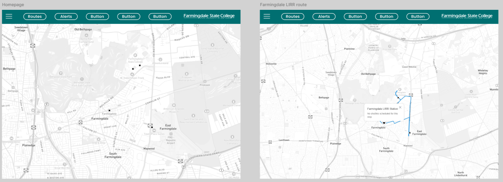
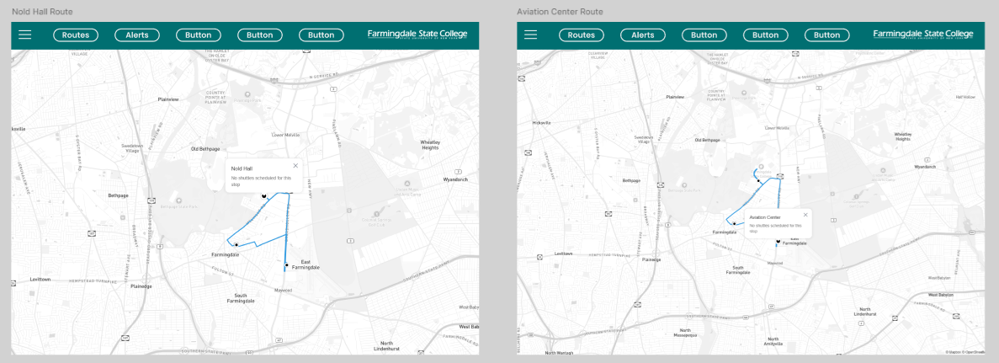
Note: I found that this designed improved the appearance and navigation of the menu elements. I felt like the horizontal menu took up too much space, preventing the user from fully being able to see the map.
Note: I figured seperating these two functions as seperate menu options, rather than having them both under the "Routes" button like I had initially, makes for a better user experience. This also helped with having these interactive elements take up the least amount of screen space possible
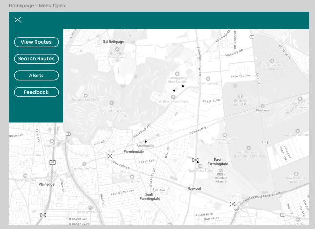
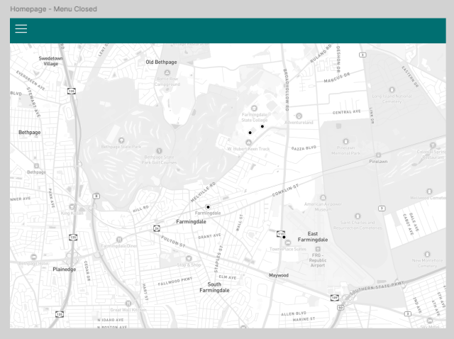
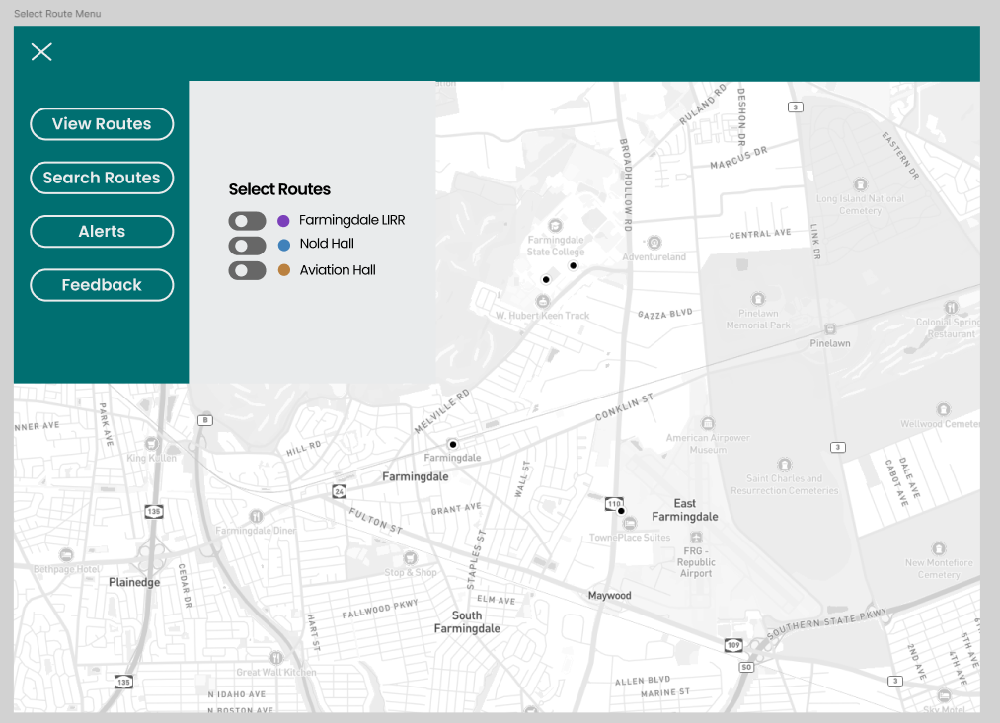
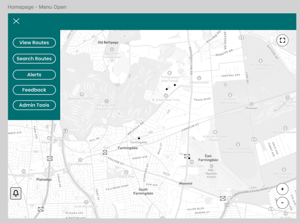
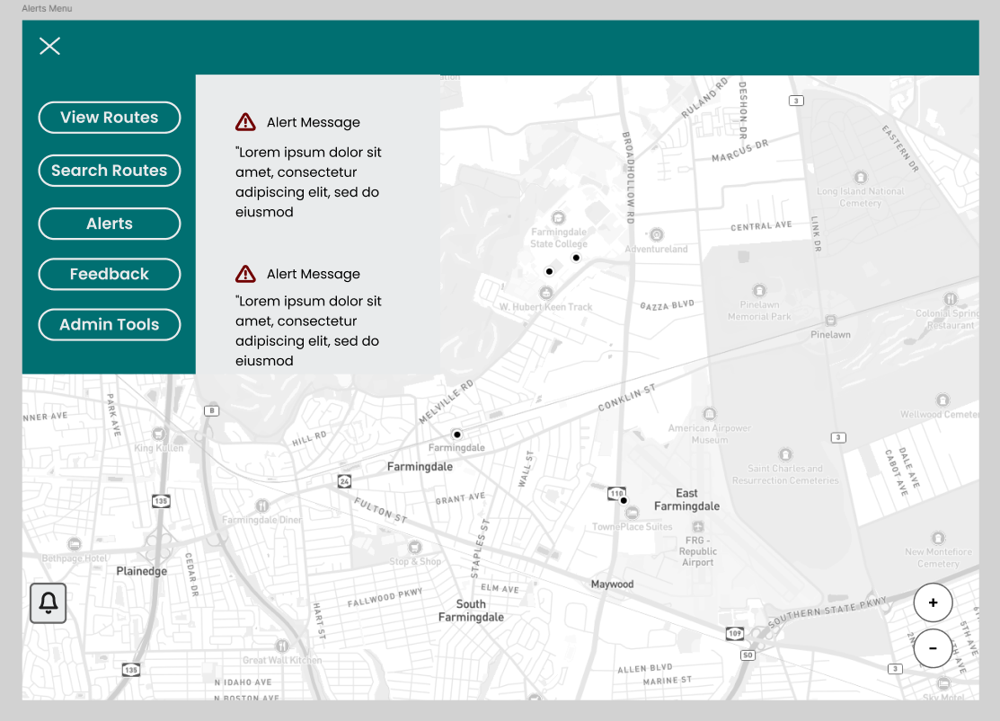
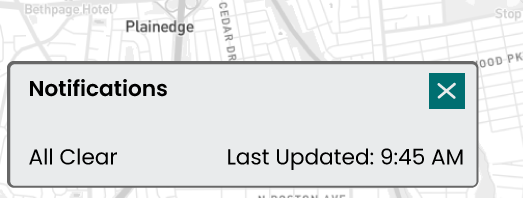
Updated style guide
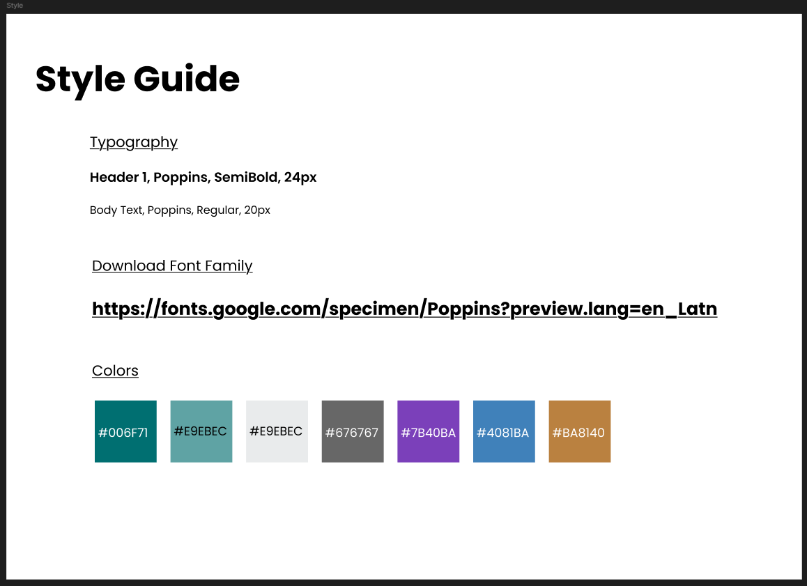
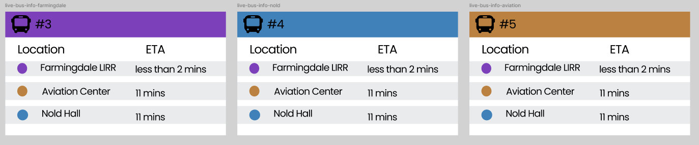
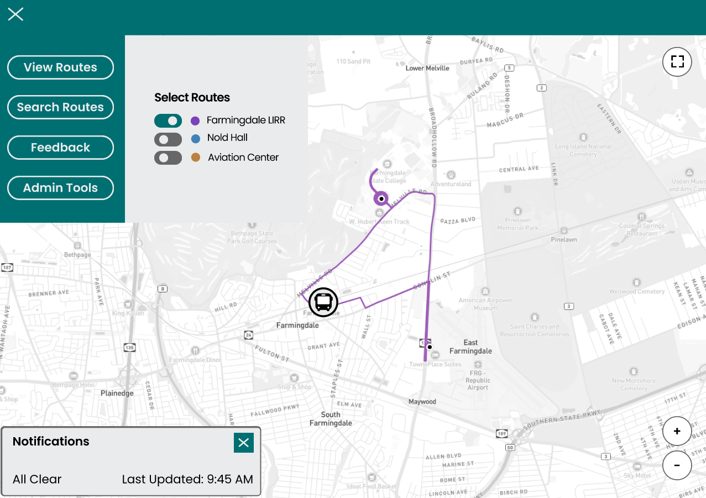